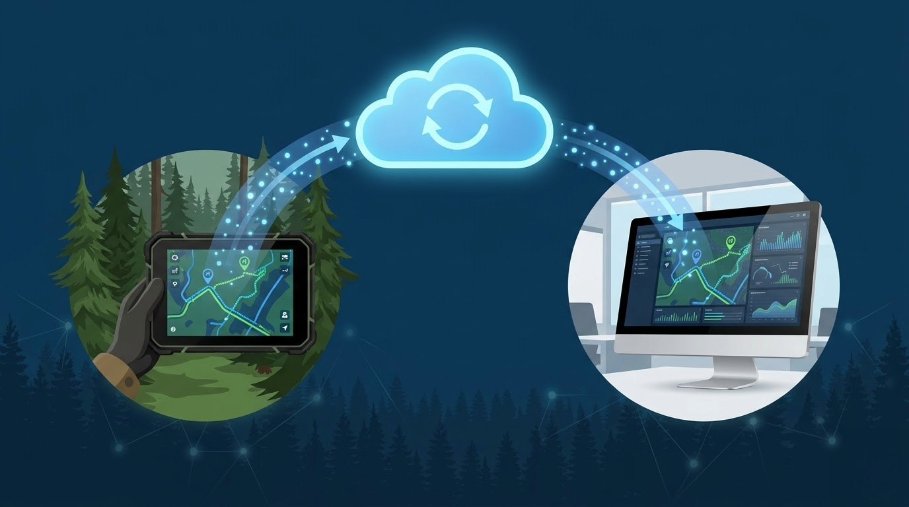
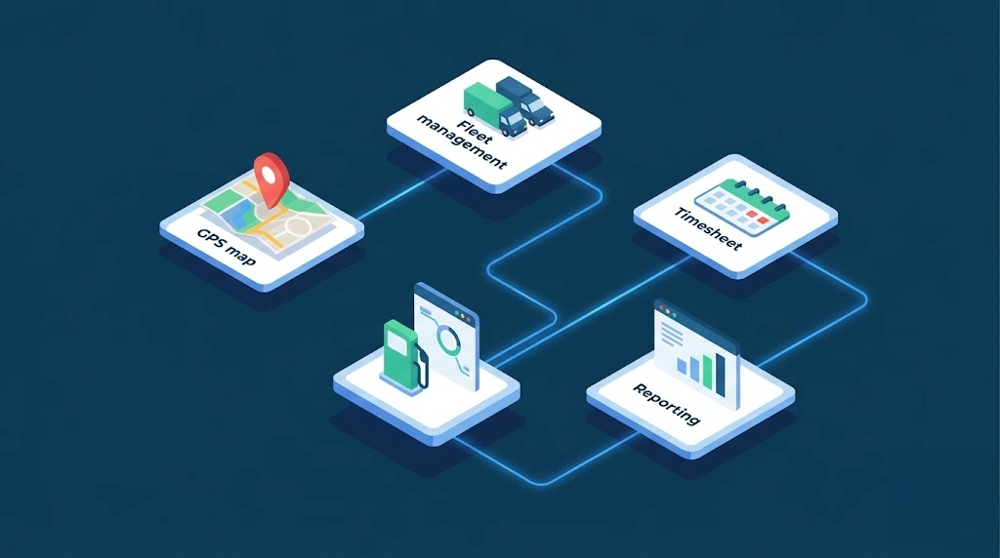

SyncLogix assure la circulation fluide de toutes vos données entre les appareils de terrain et vos systèmes de bureau. Grâce à la synchronisation en temps réel via le nuage et au mode de repli Bluetooth pour les zones sans connectivité, vos équipes disposent toujours des informations les plus récentes.
Plus besoin de transférer manuellement des fichiers ou de ressaisir des données au bureau. SyncLogix élimine les doublons, les pertes de données et les délais de transmission pour une efficacité opérationnelle maximale.

Un processus simple en quatre étapes pour garder vos données synchronisées
Les données sont captées directement sur les tablettes et les téléphones de vos équipes : traces GPS, feuilles de temps, photos géoréférencées, bons de travail, production et livraisons. Tout est enregistré localement sur l'appareil en temps réel.
Dès qu'une connexion internet est disponible, les données se synchronisent automatiquement avec le serveur nuage. Aucune intervention manuelle n'est requise. Les données sont transmises de façon sécurisée et instantanée.
En zone sans couverture cellulaire, la synchronisation Bluetooth bidirectionnelle prend le relais. Les tablettes montées sur les équipements échangent les données avec les téléphones Android des opérateurs à proximité, assurant la continuité du flux d'information.
Toutes les données collectées sont disponibles instantanément sur la version bureau de ForestLogix. Générez vos rapports, analysez la production et gérez vos opérations avec des données toujours à jour, sans délai ni ressaisie.
SyncLogix offre un ensemble complet de fonctionnalités pour assurer la fiabilité et la disponibilité de vos données en tout temps.

SyncLogix est intégré à l'ensemble de l'écosystème ForestLogix et fonctionne de façon transparente avec toutes les versions de la plateforme.
Au niveau matériel, SyncLogix est compatible avec les tablettes Windows Emdoor et les tablettes Android Topicon, offrant une fiabilité éprouvée dans les conditions exigeantes du terrain forestier.

Découvrez comment SyncLogix peut éliminer les pertes de données et accélérer vos opérations.
Contactez-nous Demander une démo